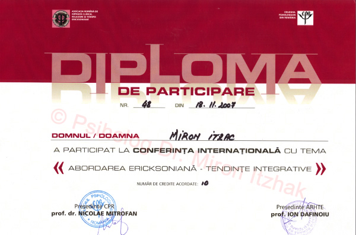

מרפאה פסיכולוגית ד"ר מירון יצחק
טלפון ארון: +40 233 236 146
מספר טלפון אישי: +40 747 627 971
מספר טלפון בישראל: +972 58 5183623


במהלך הקריירה שלו זכה ד"ר מירון יצחק למספר רב של הסמכות והמלצות המעידות על כשירותו הגבוהה. גם הוא נוכח במילון האקדמי הבינלאומי.
ד"ר מירון יצחק


